🤖 AI助理 系統初始化指南
專屬設定精靈，只需幾個簡單步驟，立即喚醒您的 AI 助理。
初使化連接
待系統紅燈恆亮之後，看到綠燈閃爍時即表示進入初使化安裝，
此時打開你的手機或電腦的WIFI設定處搜尋「openclawNPM6」開頭的網路並加入。
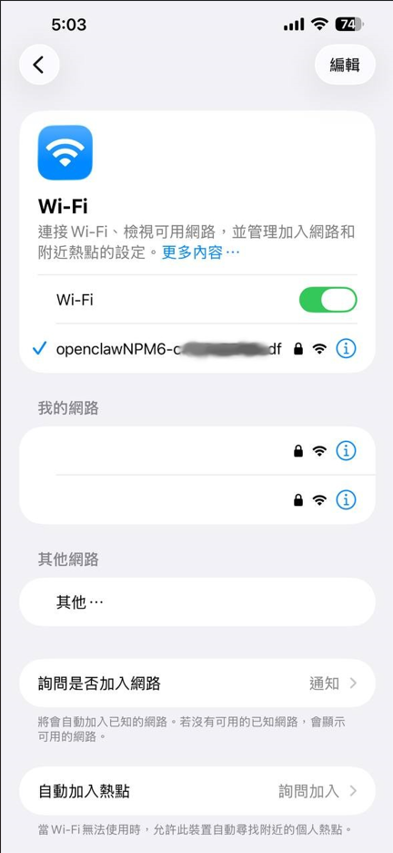
無線網路的預設密碼為 : 12345678
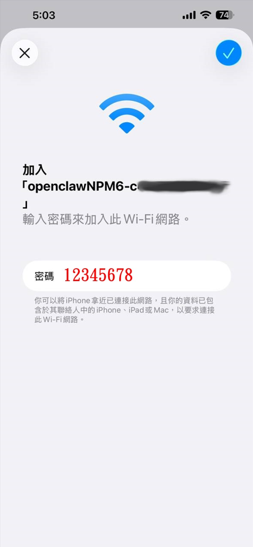
接下來打開你的瀏覽器，輸入以下網址並連接： 10.42.0.1
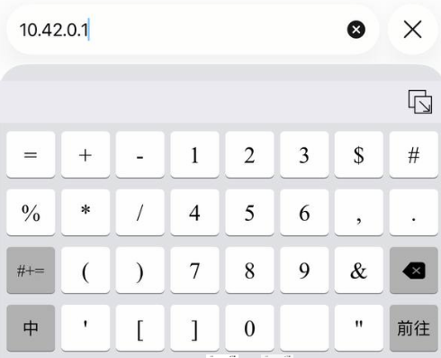
1. 網路設定
首先，請為您的龍蝦機連接網路。您可以根據您的環境選擇以下三種方式之一：
- 有線網路 (DHCP 自動取得)： 插入網路線後，系統將自動取得 IP 位址。
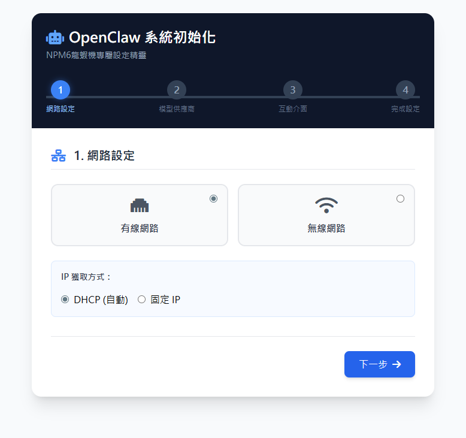
- 有線網路 (固定 IP)： 適合需要固定內部 IP 的進階使用者。
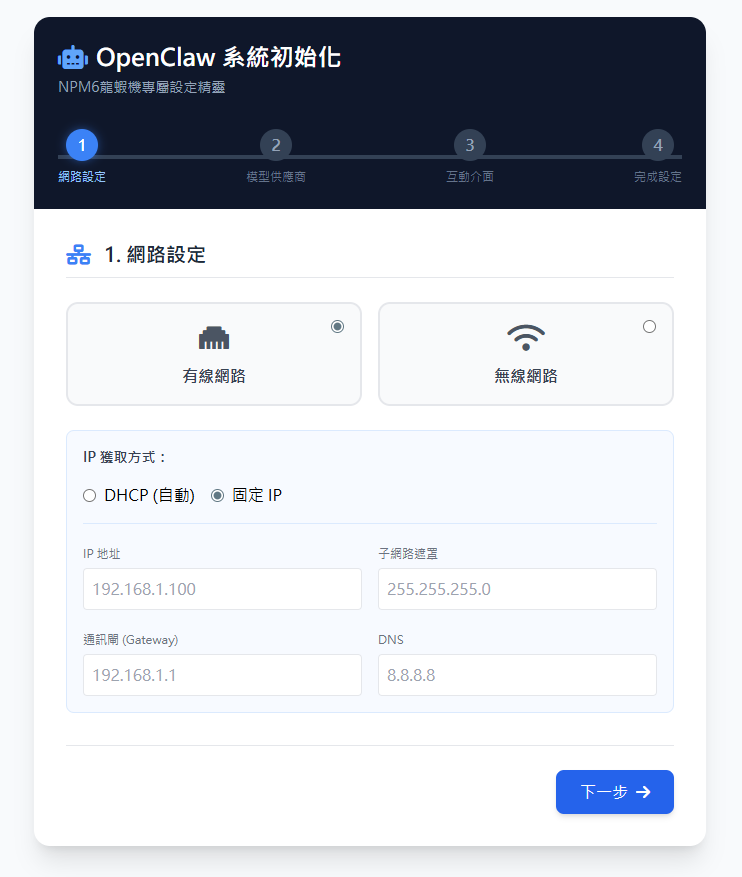
- 無線網路 (Wi-Fi)： 選擇您家中的 Wi-Fi 基地台 (AP) 並輸入密碼即可連線。
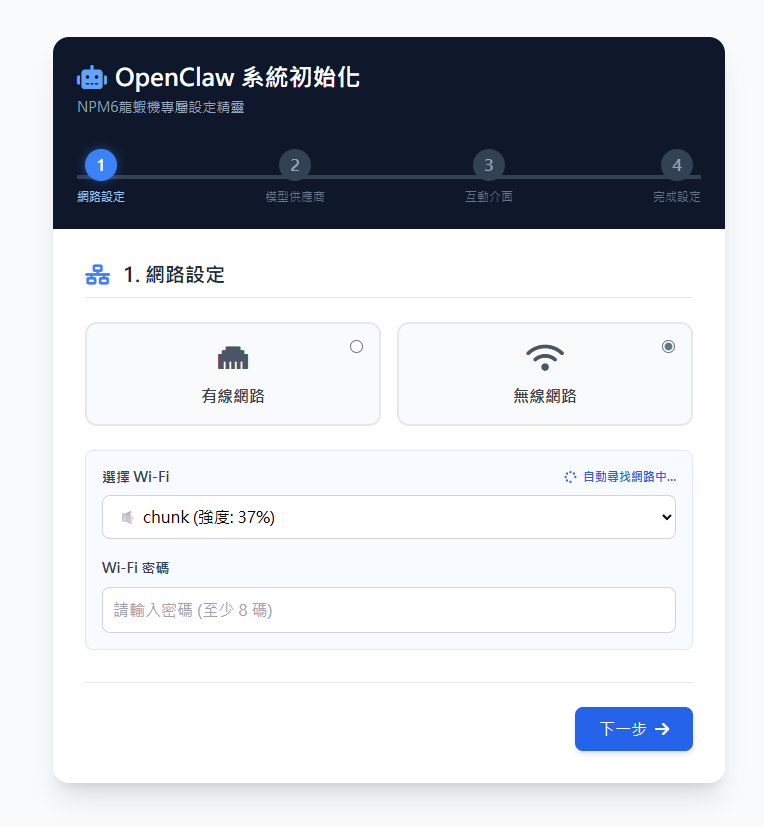
2. 選擇大語言模型供應商
選項 A：系統預設供應商 (Ollama) (推薦使用)
- 已有 Ollama 帳戶： 請直接填入您註冊的 Email 即可。
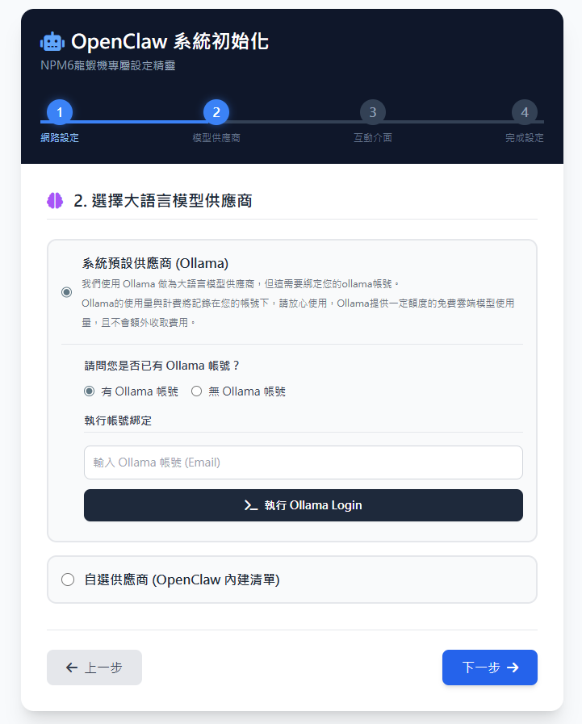
- 尚未擁有帳戶： 請點擊連結前往 Ollama 註冊頁面，建立帳號後再回來填入 Email。
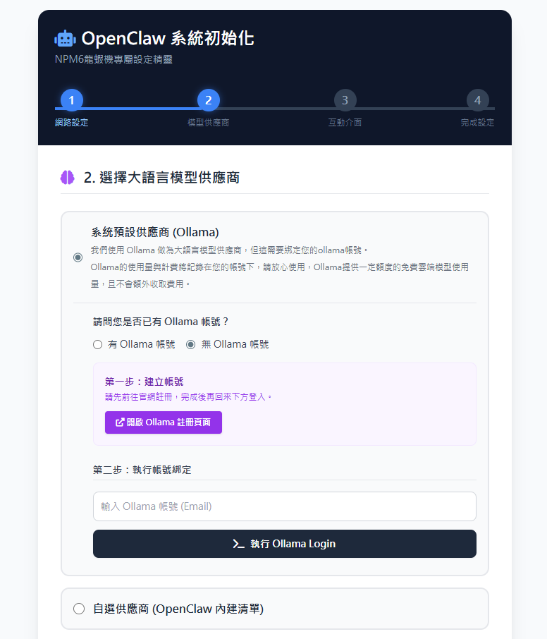
- 綁定設備： 填入 Email 後，點擊「執行 Ollama Login」。綁定成功後，務必點擊綠色按鈕打開 Ollama 確認網頁，以完成裝置連線授權。
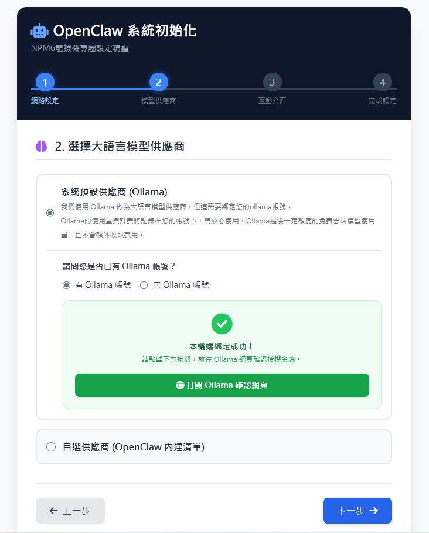
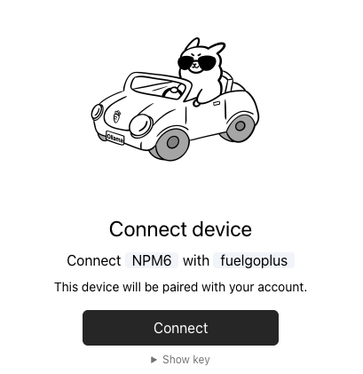
選項 B：自選供應商 (OpenClaw 內建清單)
如果您希望串接自己付費的商用大語言模型 (例如 OpenAI 等)，可在此選擇對應的供應商，並輸入您的 API Key 進行串接。
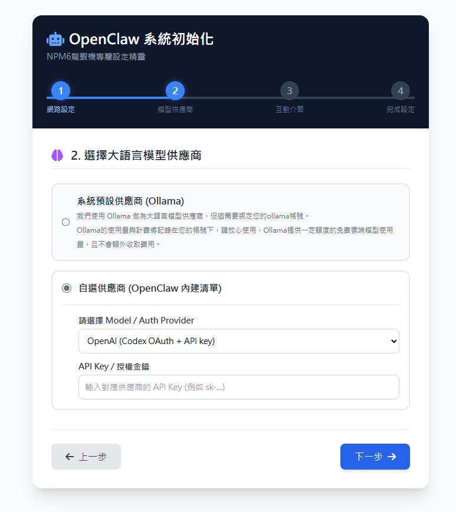
3. 選擇互動介面
設定您平時要用什麼軟體來呼叫您的龍蝦助理：
1. Telegram Bot (預設推薦)
請在 Telegram APP 內搜尋 BotFather 來創建一個專屬的機器人，取得 Token 後，將其複製並貼回設定頁面即可。
2. LINE 官方帳號
- 請前往 LINE Developers 後台創建一個 LINE Bot。
- 在「Basic settings」頁籤找到 Channel secret，複製並貼回。
- 在「Messaging API」頁籤找到 Channel access token，複製並貼回。
- Webhook 設定： 同樣在「Messaging API」頁籤中，將
Use webhook打開。設定完成後系統會配發一組專屬網址給您，請將該網址貼入 LINE 後台的 Webhook URL 欄位並點擊 Update。最後點擊 Verify 按鈕，看到成功訊息即代表設定完成。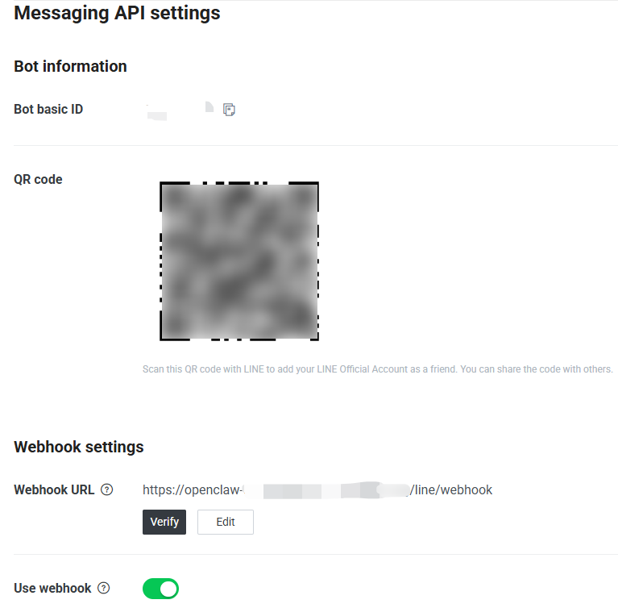
⚠️ 注意事項
本產品產生之 LINE Webhook 網址，僅供本裝置的 LINE Bot 運作使用，不得挪作他用。
3. Web 網頁介面 (搭配 Tailscale)
這是 OpenClaw 官方推薦的安全網頁使用方式。點擊「啟動 Tailscale」獲取授權連結。若無帳號系統會引導註冊。
💡 安全提示
您的電腦、手機或平板也需要安裝 Tailscale APP。它會透過虛擬私人網路 (VPN) 技術，讓您的裝置與龍蝦機處於同一個安全的虛擬內網中，避免設備暴露於公開網路的風險。
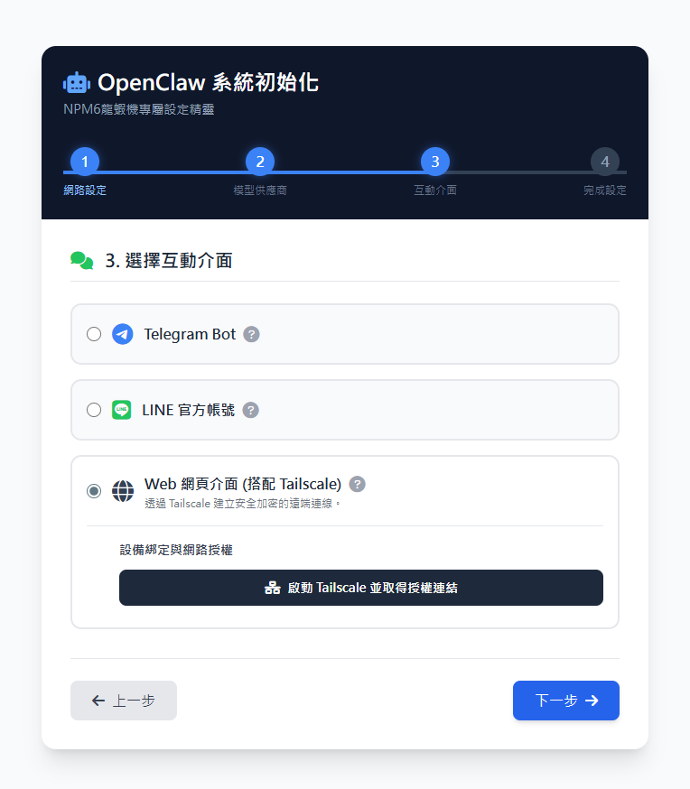
4. 注入靈魂：取個專屬名字
請為您的 AI 龍蝦助理取一個個性化的稱呼！他會記住這個名字，未來在任何對話介面中，您都可以用這個名字來呼喚他。
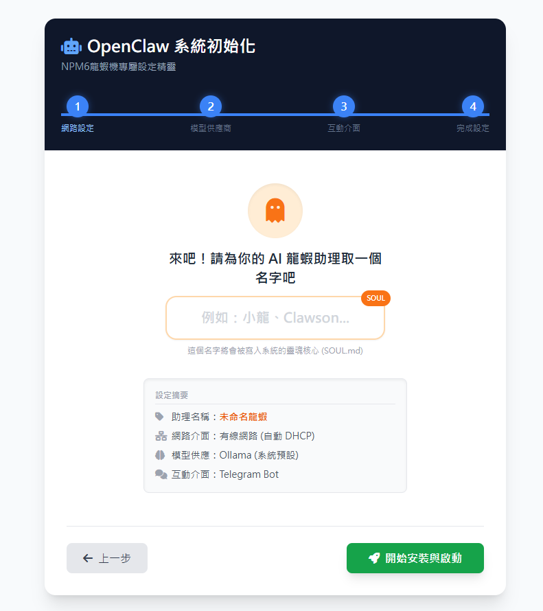
5. 系統喚醒與安全配對
1. 系統載入與喚醒
完成上述設定後，系統會倒數 10 秒進行設定載入與喚醒作業。
完成後點擊「進入」按鈕前往 OpenClaw Hub 控制中心。(請記下畫面上的 IP 資訊，您日後也可以透過瀏覽器輸入此 IP 進入控制中心)
2. 通訊軟體安全配對 (非常重要)
進入控制中心後，為了防止陌生人盜用您的機器人額度，我們設計了安全配對機制：
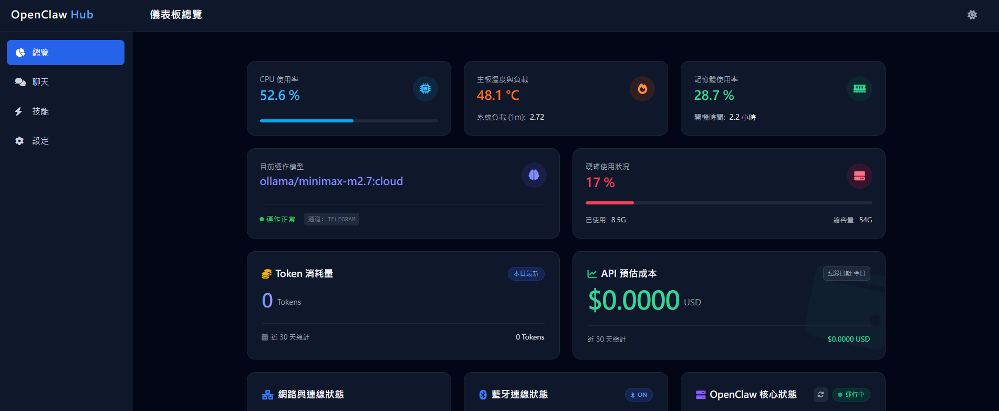
- 請保持控制中心網頁開啟。
- 前往您剛才設定的通訊軟體 (例如 Telegram)，對著您的機器人發送一則
hi。 - 您的通訊軟體會收到一則帶有「配對碼 (Pairing code)」的系統訊息。
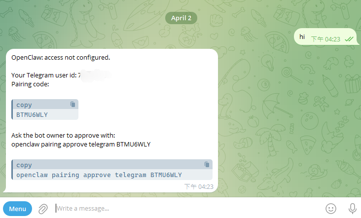
- 回到控制中心網頁，上方會彈出一個「新裝置請求連線」的核准提示。
- 核對配對碼： 確認網頁上的配對碼與通訊軟體收到的一致，點擊「允許核准」即可完成綁定！
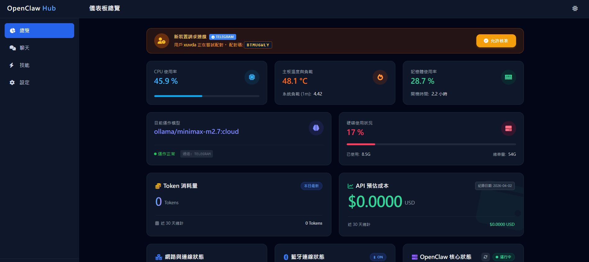
🎨 佈景主題小提示
控制中心右上角有「太陽 / 月亮」圖示，點擊即可自由切換淺色模式或深色模式。
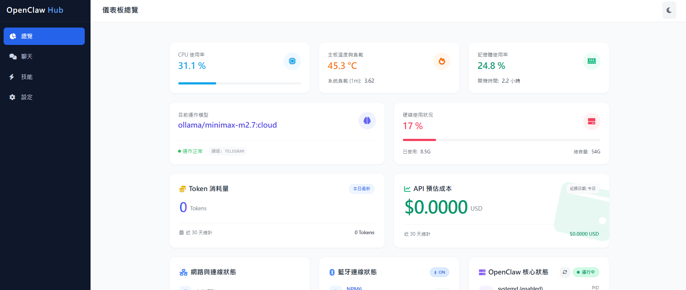